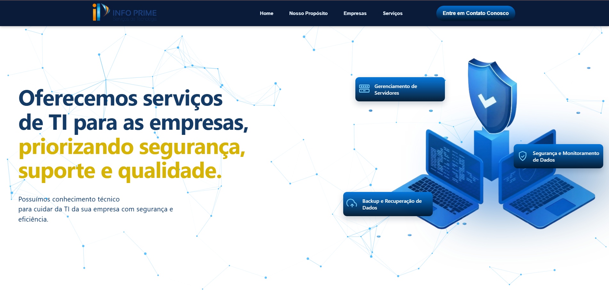
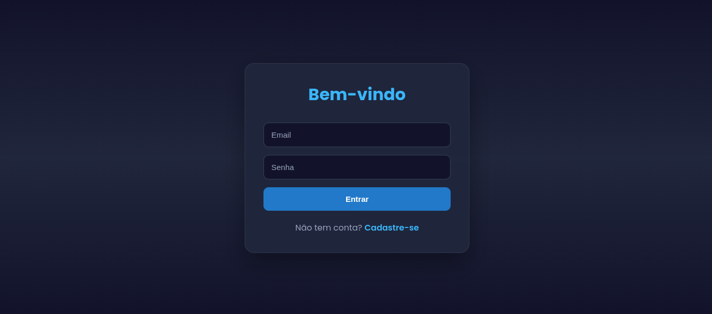
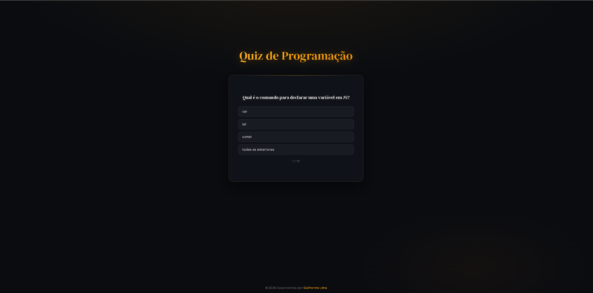
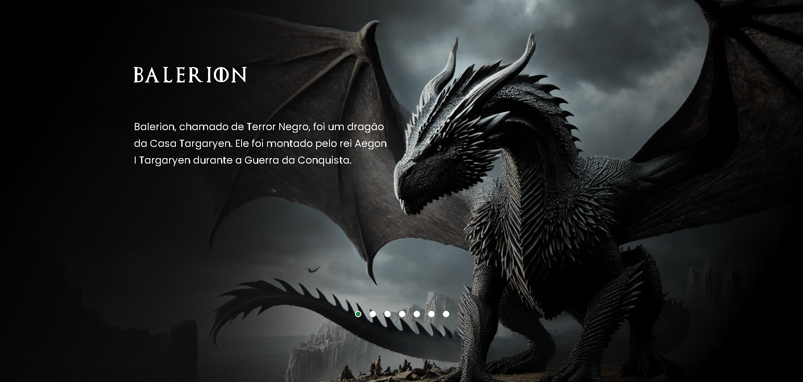
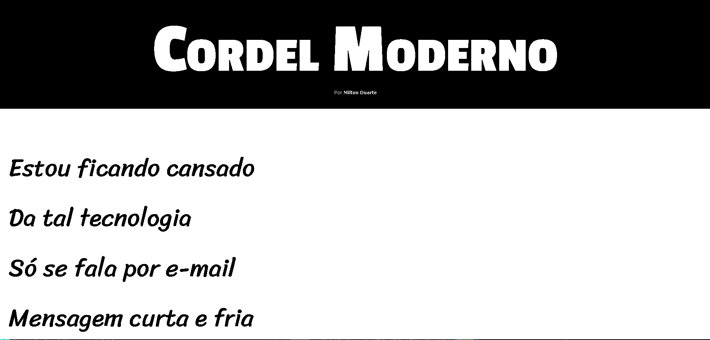

Meus Projetos

InfoPrime
Modernização da interface institucional com foco em UX, responsividade e captação de clientes.
GameTracker
Plataforma Full Stack para gerenciar seu backlog de games, com autenticação JWT e controle total da sua biblioteca.

API de Cadastro
API RESTful com cadastro, listagem e exclusão de usuários usando Node.js, Express, Prisma e MongoDB.

Quiz de Programação
Quiz online com perguntas sobre lógica e programação feito em HTML, CSS e JavaScript.

House Of The Dragon
Site interativo inspirado na série, com páginas dinâmicas para cada dragão e conteúdo responsivo.

Cordel Moderno
Site com efeito parallax e tipografia temática inspirado em poema de Milton Duarte.